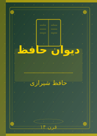
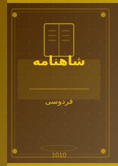

🌿 به قفسه بیصدا خوش آمدید
کتاب بخوانید، دنیاهای تازه کشف کنید.
قفسه بیصدا فضایی آرام و سنتی است که در آن کتابهای برگزیده ایرانی و جهانی با احترام و دقت معرفی میشوند. این مجموعه برای کسانی ساخته شده که کتاب را نه برای تفریح، بلکه برای زندگی میخوانند.
در اینجا با آثاری آشنا میشوید که آزمون زمان را پس دادهاند؛ از شاهنامه فردوسی تا رمانهای قرن بیستم، همه در کنار هم در سکوت و وقار منتظر شما هستند.
«کتاب، خردمندترین همدمی است که انسان میتواند داشته باشد؛ زیرا هیچگاه پرحرفی نمیکند و هر بار که به آن مراجعه میکنید، چیز تازهای برای گفتن دارد.» — اقتباس از سخنان بزرگان
📖 نگاهی به قفسهها






📌 پیشنهادهای ویژه این هفته
◾ کتابهای ایرانی پیشنهادی:
- بوف کور — نوشته صادق هدایت، شاهکار ادبیات مدرن ایران
- سووشون — نوشته سیمین دانشور، نخستین رمان بلند زن ایرانی
- سمفونی مردگان — نوشته عباس معروفی، روایتی درخشان از دهه شصت
- چشمهایش — نوشته بزرگ علوی، داستان عشق و مقاومت
- شاهنامه — سروده ابوالقاسم فردوسی، اثر جاودانه ملی ایران
◾ کتابهای جهانی پیشنهادی:
- ۱۹۸۴ — نوشته جورج اورول، رمانی تأثیرگذار درباره تمامیتخواهی
- شازده کوچولو — نوشته آنتوان دو سنتاگزوپری، کتابی برای همه سنین
- صد سال تنهایی — نوشته گابریل گارسیا مارکز، برنده جایزه نوبل
- غرور و تعصب — نوشته جین آستن، کلاسیک عاشقانه انگلیسی
- جنایت و مکافات — نوشته فئودور داستایوفسکی، کاوش در روح بشر
◾ ترتیب خواندن برای تازهکاران:
- شازده کوچولو — برای ورود به دنیای ادبیات
- بوف کور — آشنایی با ادبیات مدرن ایران
- ۱۹۸۴ — فهم ادبیات دیستوپیایی
- صد سال تنهایی — تجربه رئالیسم جادویی
- شاهنامه (گزیده) — پیوند با میراث ملی
📋 فهرست کتابهای معرفیشده
| ردیف | نام کتاب | نویسنده | ژانر | سال انتشار | زبان اصلی |
|---|---|---|---|---|---|
| ۱ | بوف کور | صادق هدایت | رمان مدرن | ۱۹۳۷ | فارسی |
| ۲ | سووشون | سیمین دانشور | رمان اجتماعی | ۱۳۴۸ | فارسی |
| ۳ | شاهنامه | فردوسی | حماسی | ۱۰۱۰ م | فارسی |
| ۴ | دیوان حافظ | حافظ شیرازی | شعر غزل | قرن ۱۴ | فارسی |
| ۵ | ۱۹۸۴ | جورج اورول | دیستوپیا | ۱۹۴۹ | انگلیسی |
| ۶ | شازده کوچولو | آنتوان دو سنتاگزوپری | فلسفی | ۱۹۴۳ | فرانسوی |
| ۷ | صد سال تنهایی | گارسیا مارکز | رئالیسم جادویی | ۱۹۶۷ | اسپانیایی |
| ۸ | جنایت و مکافات | داستایوفسکی | رمان روانشناختی | ۱۸۶۶ | روسی |
| ۹ | سمفونی مردگان | عباس معروفی | رمان | ۱۳۶۸ | فارسی |
| ۱۰ | غرور و تعصب | جین آستن | رمان عاشقانه | ۱۸۱۳ | انگلیسی |
| این فهرست شامل برگزیدهترین آثار ادبیات کلاسیک ایرانی و جهانی است. | |||||
🔗 مشاهده بیشتر
برای آشنایی بیشتر با کتابها به صفحات زیر بروید:
- 📚 فهرست کامل کتابها — جدید معرفی ۱۵ اثر برگزیده
- 🇮🇷 کلاسیکهای ایرانی — آثار جاودانه ادبیات فارسی
- 🌍 کلاسیکهای جهانی — بهترین آثار ادبیات جهان
- ℹ️ درباره قفسه بیصدا — آشنایی با هدف این مجموعه